History of the Marching 97
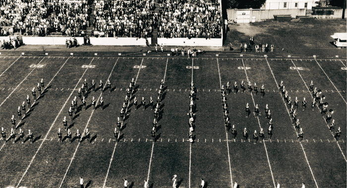
The Marching 97 has been a part of Lehigh University for over a century; 1906 marks the start of a remarkable and singular history. In
its prime, the band was regarded as among the finest in the world, and performed both field shows and stage concerts across the country.
Auditions used to be held at the beginning of each academic year, and was quite a competitive organization! Over the years, one thing
remained constant throughout the band's existence: sociable, fun-loving, rowdy enthusiasm — a type of spirit the band calls "psyche".
While the members and directors may change, the spirit of the band remains the same as it was when the band first assembled in 1906.
Perhaps nobody has better described the Lehigh Band than one of its founders, E.E. Ross: "There was never a single case of jealousy or
friction...we worked with little formal system but with complete cooperation - and we had a lot of fun."
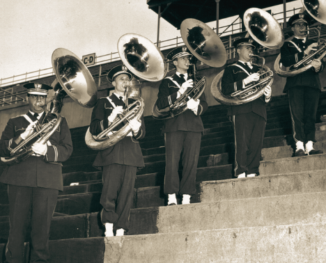
Did you know?
After an away football game against Harvard, a Harvard newspaper declared the Marching 97 the "Finest Band East of All Points West", which has stuck ever since!
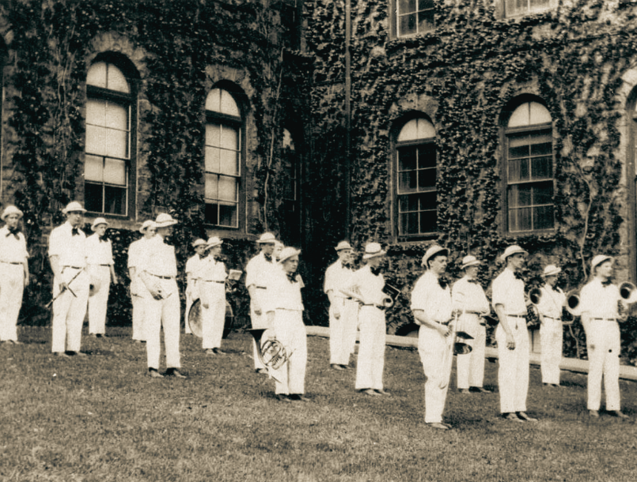
A fan-favorite tradition!
A tradition known as "EcoFlame" occurs every Friday morning before the exhilarating Lehigh-Lafayette game. It began in the 1970s, when Professor Rich Aaronson asked the band to play for his ECO 001 class. The Marching 97 interrupts classes to play fight songs and bring psyche to the students before the big rivalry game!
Timeline
1906: The first Lehigh University band is founded under the direction of E. E. Ross '08, with the goal of increasing school spirit. Approximately 15 men meet for the first time in Saucon (now Christmas-Saucon) Hall.
1907: The band makes their first appearance at a football game.
1908: The band performs for Andrew Carnegie, who arrives on campus for "Carnegie Day", to celebrate the construction of Taylor Hall (funded by the Carnegie Foundation). The first concert performance of the Lehigh Band is also held in the newly-built Drown Hall.
1923: The L.U. Band performs their first recorded halftime show, forming a "human L".
1948: The 97-member marching system is adopted under the direction of LTC William T. Schempf.
1963: The band performs a concert in Carnegie Hall with the Columbia University band.
1964: The band plays at the 1964 New York World's Fair.
1965: The Brown and White (Lehigh's school newspaper) refers to the band as "the Marching 97" for the first time.
1969: The 97 allows women from nearby universities to join the band as cheerleaders. The band also returns to Carnegie Hall, this time with the Yale University band.
1971: Lehigh University first admits women. The band travels to the Lehigh-Delaware football game by train, serenading onlookers with renditions of "The 1812 Overture".
1973: The first women join the Marching 97, removing their shakos to reveal their long hair after a field show set to “There's Nothing Like a Dame”. Lehigh also hosts the non-competitive Globe-Times Band Festival at Taylor Stadium.
1977: The band travels to the Pioneer Bowl with the football team and makes their first appearance on national TV. Lehigh beats Jacksonville State 33-0.
1987: The Marching 97 marches its final season in the venerated Taylor Stadium. The band currently performs at home football games in Goodman Stadium.
2014: The band performs at Yankee Stadium for the 150th meeting of the Lehigh-Lafayette football game.
2018: The 97 makes its first trip overseas to perform in the London New Year's Day Parade in England.
2024: The Marching 97 goes to Disney World Imagination Campus and performs for Orlando.
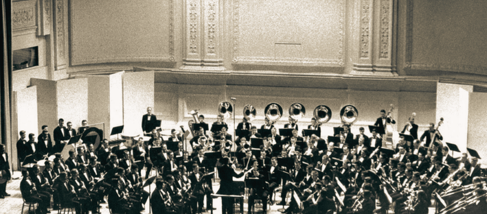
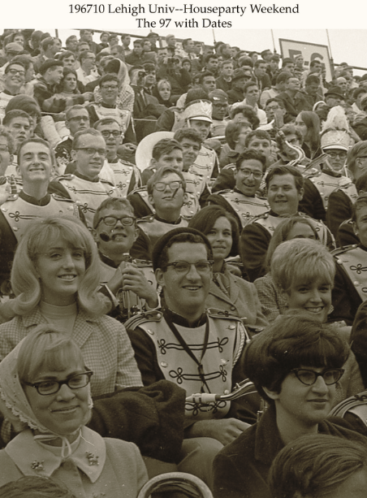
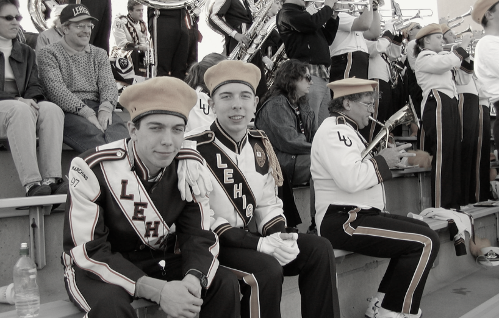
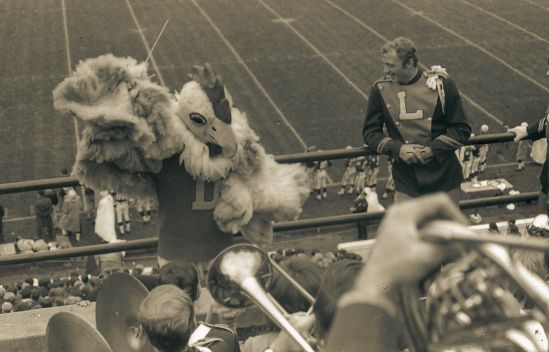
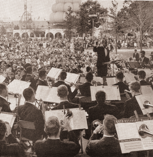
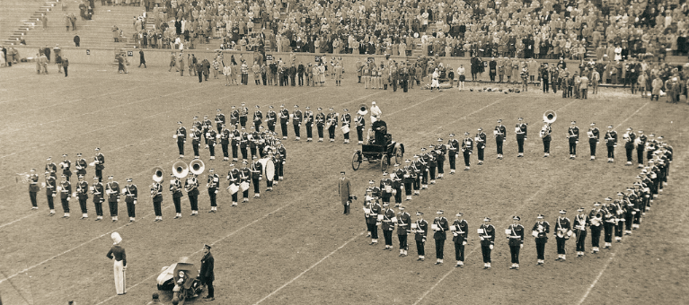
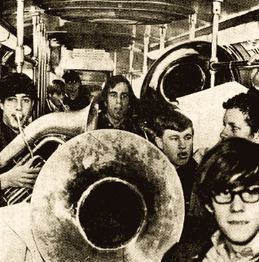
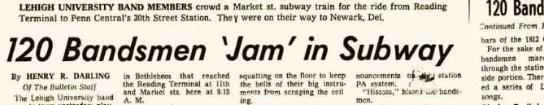